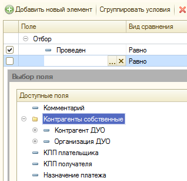

Дополнения условий отбора
Справочник предназначен для расширения перечня доступных полей в таблице правил отбора. Справочник должен быть заполнен до начала заполнения Условий отбора. В результате дополненные поля из этого механизма смогут быть добавлены к основному списку условий отбора (Рисунок 2).

Рисунок 1. Форма элемента справочника "Дополнения условий отбора"

Рисунок 2. Выбор дополненных полей в форме настроек Условия отбора.
Для настройки дополнений условий отбора необходимо (Рисунок 1):
- Указать краткое наименование, отражающее суть настройки.
- В поле «Родитель» указать, если необходимо, группу справочника «Дополнения условий отбора» для помещения туда редактируемого элемента настроек.
- На вкладке «Описание» ввести краткое содержание и назначение настроек.
- На вкладке «Настройка» нужно описать механизм получения денных. Для этого:
- В поле «Имя набора данных» ввести имя набора, как оно появится в настройках «Условий отбора». Имя должно быть сформировано согласно правилам встроенного языка 1С.
- В поле «Текст запроса» нужно описать запрос к данным, который вернет требуемые нами поля. Для облегчения формирования запроса можно воспользоваться «Конструктором запроса».
- После описания текста запроса, при отсутствии ошибок, в таблице «Поля запроса» появится перечень полей, сформированных запросом. Таблица заполняется автоматически и не подлежит редактированию.
- В таблице «Настройка связи с объектом» обязательно должна быть заполнена хотя бы одна связь. Эта таблица описывает связь исходного объекта, либо его табличных частей (при указании «Источника связи») с данными, полученными в запросе. Заполняется так же, как соответствующая вкладка «Связи» в Системе Компоновки Данных 1С. По умолчанию в таблице всегда есть строка, описывающая связь «все-со-всеми» (Рисунок 1).
- После завершения настройки дополнений, в перечне полей «Условий отбора» по тому же виду объекта появятся полученные нами поля, как это показано на рисунке (Рисунок 2).
- Если форма настройки условий была открыта в процессе формирования дополнений, то ее потребуется закрыть и открыть повторно.